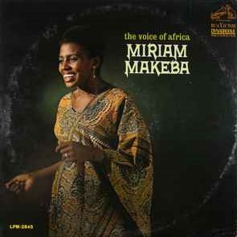
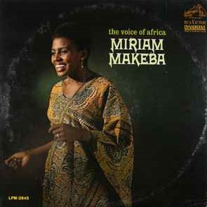

Miriam Makeba nacque a Johannesburg il 4 Marzo 1932; sua madre era una sangoma di etnia swazi e suo padre, morto quando lei aveva sei anni, era uno Xhosa. Il suo nome anagrafico completo era Zenzile Makeba Qgwashu Nguvama Yiketheli Nxgowa Bantana Balomzi Xa Ufnu Ubajabulisa Ubaphekeli Mbiza Yotshwala Sithi Xa Saku Qgiba Ukutja Sithathe Izitsha Sizi Khabe Singama Lawu Singama Qgwashu Singama Nqamla Nqgithi. Iniziò a cantare a livello professionale negli anni cinquanta, con il gruppo Manhattan Brothers per poi fondare una propria band, The Skylarks, che univa jazz e musica tradizionale sudafricana.
Miriam cominciò ad ottenere un notevole successo ma questo si tradusse con l'esilio imposto dal governo di Pretoria dopo il suo primo tour negli Stati Uniti del Sessanta: era diventata il simbolo di un popolo oppresso. Resterà lontana dal suo paese per trent'anni, una sofferenza enorme per lei, così legata alla propria terra. Nel 1960 partecipò al documentario anti-apartheid Come Back, Africa. Si trasferì a Londra, dove conobbe Harry Belafonte, che la aiutò a trasferirsi negli Stati Uniti e farsi conoscere come artista. In USA incise molti dei suoi brani di successo, come Pata Pata, The Click Song e Malaika. Nel 1963 portò la propria testimonianza al comitato contro l'apartheid delle Nazioni Unite. Si trasferì in Guinea, dove divenne amica del Presidente Ahmed Sékou Touré. Continuò a tenere concerti soprattutto in Africa, Sudamerica ed Europa e svolse anche il ruolo di delegata della Guinea presso le Nazioni Unite.
Nel 1990 Nelson Mandela convinse la Makeba a rientrare in Sudafrica. Nel 1992 recitò nel film Sarafina! Il profumo della libertà, ispirato alle sommosse di Soweto del 1976, nel ruolo della madre della protagonista. Il 16 ottobre 1999, Miriam Makeba fu nominata Ambasciatrice di buona volontà dell'Organizzazione delle Nazioni Unite per l'alimentazione e l'agricoltura (FAO). Nel 2002 prese parte anche al documentario Amandla!: A Revolution in Four-Part Harmony, ancora sull'apartheid. Nel 2005, ormai malferma in salute, si dedicò a un tour mondiale di addio alle scene, cantando in tutti i paesi che aveva visitato nella sua carriera. Miriam Makeba morì la notte del 9 novembre 2008 a causa di un attacco cardiaco a Castel Volturno dove, qualche ora prima, nonostante forti dolori al petto, si era esibita in un concerto contro la camorra, che aveva lì ucciso sei immigrati africani: il concerto era dedicato anche allo scrittore Roberto Saviano.


Makeba released more than 30 albums during her career. The dominant styles of these shifted over time, moving from African jazz to recordings influenced by Belafonte's "crooning" to music drawing from traditional South African musical forms. She was known for having a dynamic vocal range, and was described as having an emotional awareness during her performances. Makeba said that she did not perform political music, but music about her personal life in South Africa, which included describing the pain she felt living under apartheid. Her music earned her the moniker "Mama Africa". Here there's a selection of her best albums.
 

Miriam Makeba is a self-titled, debut album by Miriam Makeba. It was released in 1960 by RCA Victor in New York City. Recorded a year after the international hit musical King Kong (1959), which provided many black South African musicians with the opportunity to escape apartheid, Makeba's debut album paints a compelling portrait of the artist in exile.
An Evening with Belafonte/Makeba is a Grammy Award-winning 1965 album by Harry Belafonte and Miriam Makeba, released by RCA Victor. Despite the title, the album is not a collection of live duet performances by Harry Belafonte and Makeba. It is a studio album of 12 tracks, five by Belafonte, five by Makeba, and two duets. The songs are all African traditional tunes sung in tribal languages like Xhosa and Zulu.
Homeland is a 2000 album by South African singer Miriam Makeba. It was released in 2000 on CD by world music label Putumayo. Both the title-track and the whole record are largely conceived as a celebration of the end of apartheid. The record was released a few days before the South African Freedom Day on 27 April 2000. The album was nominated for a Grammy Award in the Best World Music Album category.
Ordine per Servizio Meritorio, Sudafrica
Ordine della Ikhamanga in Oro, Sudafrica
Commendatore dell'Ordre des Arts et des Lettres, Francia
Makeba's 1965 collaboration with Harry Belafonte won a Grammy Award, making her the first African recording artist to win this award. Makeba shared the 2001 Polar Music Prize with Sofia Gubaidulina. They received their prize from Carl XVI Gustaf, the King of Sweden, during a nationally televised ceremony at Berwaldhallen, Stockholm, on 27 May 2002.
Makeba won the Dag Hammarskjöld Peace Prize in 1986, and in 2001 was awarded the Otto Hahn Peace Medal in Gold by the United Nations Association of Germany (DGVN) in Berlin, "for outstanding services to peace and international understanding". She also received several honorary doctorates. In 2004, she was voted 38th in a poll ranking 100 Great South Africans.
While performing with the Manhattan Brothers in 1955, Makeba met Nelson Mandela, then a young lawyer; he later remembered the meeting, and that he felt that the girl he met "was going to be someone." Nel 1990 Nelson Mandela convinse la Makeba a rientrare in Sudafrica. Upon her death, former South African President Nelson Mandela said that "her music inspired a powerful sense of hope in all of us."

After having moved to Bruxelles, Masekela introduced Makeba to Paul Simon, and a few months later she embarked on Simon's very successful Graceland Tour. Sangoma is a 1988 album by Miriam Makeba. It was a comeback album after a long pause since Comme une symphonie d'amour in 1979, spurred by touring with Paul Simon.
Makeba and Masekela (her husband from 1963 to 1968) were neighbours of the jazz musician Dizzy Gillespie in Englewood, New Jersey; they spent much of their time in Harlem. Makeba, Gillespie, Simone, and Masekela recorded and released her studio album, Eyes on Tomorrow, in 1991. It combined jazz, R&B, pop, and traditional African music, and was a hit across Africa. Makeba and Gillespie then toured the world together to promote it.
"I look at an ant and see myself: a native South African, endowed by nature with a strength much greater than my size so I might cope with the weight of a racism that crushes my spirit. I look at a bird and I see myself: a native South African, soaring above the injustices of apartheid on wings of pride, the pride of a beautiful people."
Se vuoi leggere di più di Miriam Makeba: